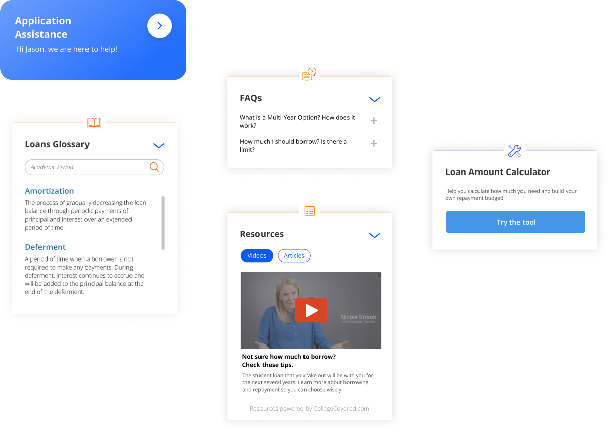

Bridging the Resource Gap in Student Loans
My Role
Product Designer | User Researcher
Timeline
Jan - Aug 2020
Team
Stacy Kellner, Cora Wang, Bidisah Roy, Aaron Bishop
Client
Discover Student Loans (DSL)
The experience of applying for a student loan can be overwhelming. The process of getting a student loan is tightly coupled with discovering career aspirations, deciding which institution(s) to attend, planning long-term finances and selecting the appropriate loan products. Our team aims to help Discover Student Loans (DSL) understand the decision context through research and create value for their customers in terms of financial literacy and making the right decisions.
Client’s Problem
Why is there a drop-off in the product selection page?
We started our research by a competitive analysis with similar private lenders, and found that people didn’t choose the other lenders because DSL has an inferior UI. Since our client doesn’t want to start a “price war” by modifying the rates among its competitors, we did comprehensive primary and secondary research to understand the student loan application from the perspectives of the applicants.
When talking with people had experiences with student loans, the most used adjectives are “uncertain”, “complicated”, and “anxious”. 80% of the users had the experience of starting an application but didn’t finish them, because “they were not ready”.
Problem Reframe
How might we help customers commit to one of DSL’s student loan products?
The Solution
AppAssist: Guide you to make confident loan decisions by closing the resource gap.

Through our research, we found that customers, no matter students or parents, have a need and desire for more guidance, and we think the solution space lies in closing the resource gap - specifically, providing in-application guidance to customers.
How did we get there?
Stakeholder Map: Student Loan Industry
There are multiple plays in the student loan industry: students, parents, lenders, educators, and universities. We created this stakeholer map to define the user groups we want to do primary research with: light research with all stakeholders, and more in-depth research with undergraduate students and their parents.

Primary Research
We spent three months conducting primary research with the defined stakeholders, understanding the rationales behind customer’s decisions and exploring the painpoints & opportunities from diverse perspectives.
80+
USER
RESEARCH
Student & Parent Persona
For high school and undergraduate students, parents are usually more involved in the loan application process than their children.
Sheltered Scholar: an incoming college student who largely rely on his parents to complete his student loan applications.
Guiding Parent: parents who are involved in the student loan application process, but at the same time want to use this opportunity to improve their children's financial literacy.
Key Insights
After two rounds of research and affinity mapping sessions, we synthesized our findings into a collection of models and insights.
When making financial decisions for their kids, parents want to feel like they’re in the driver’s seat.
“Parents are afraid of admitting what they don’t know to their children because they think it’s their responsibility to know.”
- A Financial Advisor
Parents accept that there can be a “right” amount of debt.
“My idea was that she shouldn’t graduate with more than $20k worth of debt. It just seems like a reasonable amount that can be paid off in 5 years. It's okay to go into debt for the right purpose. ”
- A Dad reflecting on how he made the student loan decision for his daughter
Customer Journey: Paying for College
User Flow
Before:
After:
The Final Delivery
AppAssist: Centralized resources as a guide
Key Elements
We built interactive components to compensate different modes of learning
The Design System
I created a design system for the team to stay consistent in design and shorten the path to implementation for Discover. Our choice of colors and typography are aligned with Discover’s brand: friendly, helpful, and refreshing.
Microinteractions
Progress Tracking
Progressive Onboarding
The Result
78% of the uses prefer our design in A/B testing against the original student loan application
"This toolbox gives me a much better idea of how student loans work! Without it, student loans are usually prolonged and intimidating."
— parent & 3-time student loan borrower